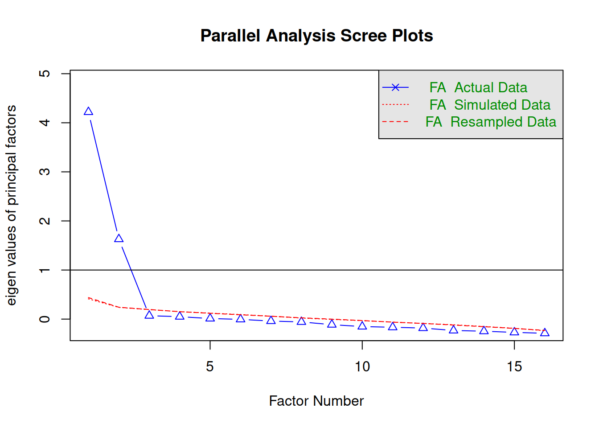
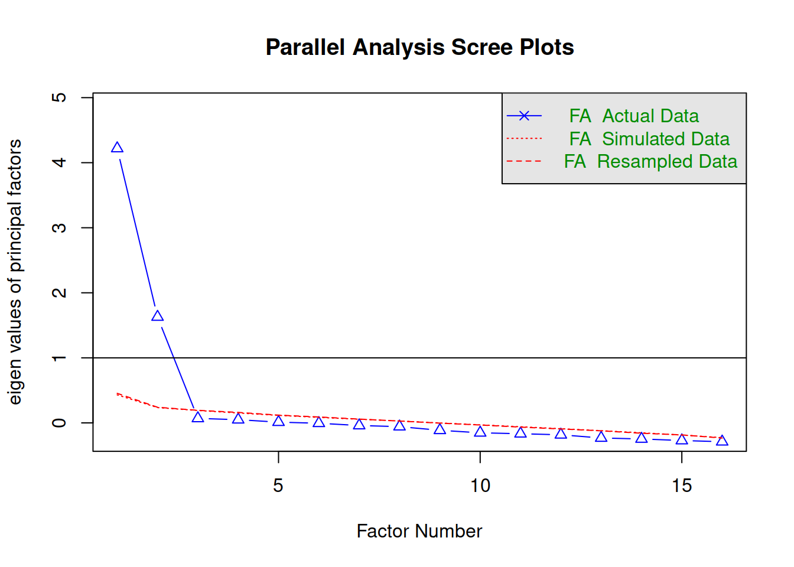
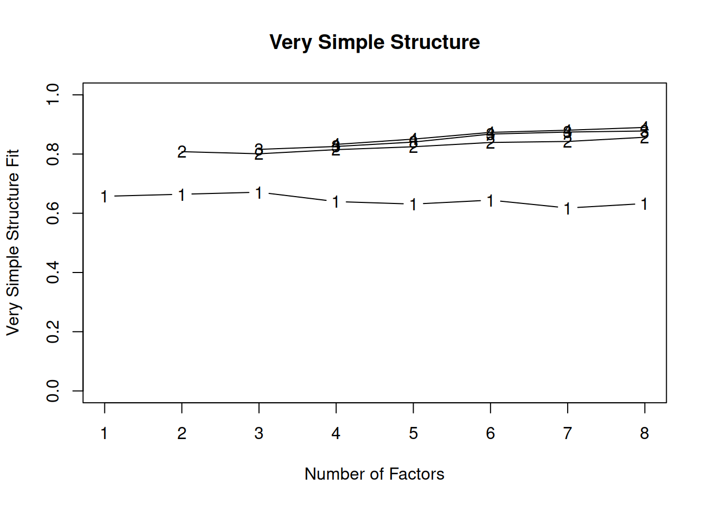
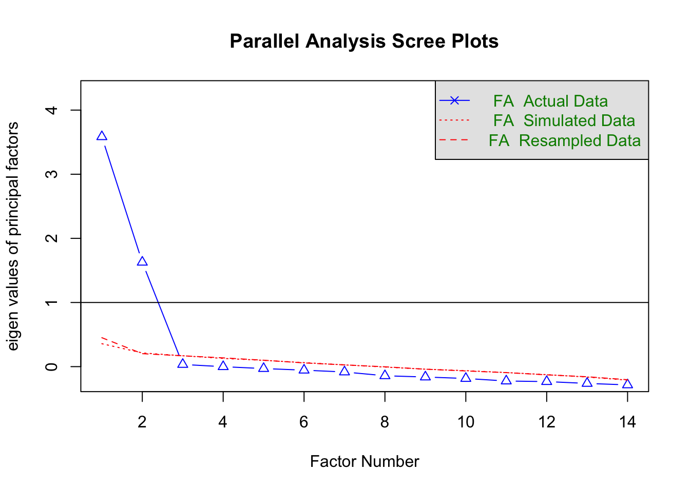
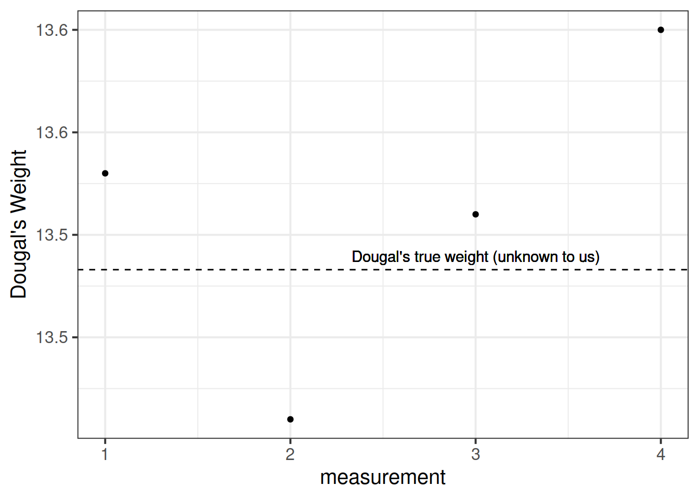

Practical Issues with EFA
Data: pgpets.csv
A pet food company has conducted a questionnaire on the internet (\(n = 620\)) to examine whether owning a pet influences low mood. They asked 16 questions on a Likert scale (1-7, detailed below) followed by a simple Yes/No question concerning whether the repsondent owned a pet.
There are lots of questions, and the researchers don’t really know much about the theory of mood disorders, but they think that they are likely picking up on multiple different types of “low mood.” They want to conduct a factor analysis to examine this, and then plan on investigating the group differences (pet owners vs not pet owners) on the factor scores.
The data is available at https://uoepsy.github.io/data/pgpets.csv
|
QuestionNumber
|
Over the last 2 weeks, how much have you had/have you been…
|
|
item1
|
Little interest or pleasure in doing things?
|
|
item2
|
Feeling down, depressed, or hopeless?
|
|
item3
|
Trouble falling or staying asleep, or sleeping too much?
|
|
item4
|
Feeling tired or having little energy?
|
|
item5
|
Poor appetite or overeating?
|
|
item6
|
Feeling bad about yourself - or that you are a failure or have let yourself or your family down?
|
|
item7
|
Reading the newspaper or watching television?
|
|
item8
|
Moving or speaking so slowly that other people could have noticed? Or the opposite - being so fidgety or restless that you have been moving around a lot more than usual?
|
|
item9
|
A lack of motivation to do anything at all?
|
|
item10
|
Feeling nervous, anxious or on edge?
|
|
item11
|
Not being able to stop or control worrying?
|
|
item12
|
Worrying too much about different things?
|
|
item13
|
Trouble relaxing?
|
|
item14
|
Being so restless that it is hard to sit still?
|
|
item15
|
Becoming easily annoyed or irritable?
|
|
item16
|
Feeling afraid as if something awful might happen?
|
Question 1
Read the data into R.
Create a new object in R that contains a subset the data. It should include all variables except for the participant ID and the variable corresponding to whether or not they have a pet (we’re going to come back to these later on).
In this new object, change the names of the columns to match the question number, rather than the question itself (see the data description above). This will be easier to work with.
Hint:
Check the output of the code paste0("item", 1:10). Consider this code in combination with another function: names(data). How could you combine the two codes to assign the new names to the current variable names?
Solution
library(tidyverse)
library(psych)
pgpets <- read_csv("https://uoepsy.github.io/data/pgpets.csv")
## [1] "little_interest_or_pleasure_in_doing_things"
## [2] "feeling_down_depressed_or_hopeless"
## [3] "trouble_falling_or_staying_asleep_or_sleeping_too_much"
## [4] "feeling_tired_or_having_little_energy"
## [5] "poor_appetite_or_overeating"
## [6] "feeling_bad_about_yourself_or_that_you_are_a_failure_or_have_let_yourself_or_your_family_down"
## [7] "trouble_concentrating_on_things_such_as_reading_the_newspaper_or_watching_television"
## [8] "moving_or_speaking_so_slowly_that_other_people_could_have_noticed_or_the_opposite_being_so_fidgety_or_restless_that_you_have_been_moving_around_a_lot_more_than_usual"
## [9] "a_lack_of_motivation_to_do_anything_at_all"
## [10] "feeling_nervous_anxious_or_on_edge"
## [11] "not_being_able_to_stop_or_control_worrying"
## [12] "worrying_too_much_about_different_things"
## [13] "trouble_relaxing"
## [14] "being_so_restless_that_it_is_hard_to_sit_still"
## [15] "becoming_easily_annoyed_or_irritable"
## [16] "feeling_afraid_as_if_something_awful_might_happen"
## [17] "do_you_own_a_pet"
## [18] "ppt_id"
df <- pgpets %>%
select(-ppt_id, -do_you_own_a_pet)
names(df) <- paste0("item", 1:ncol(df))
head(df)
## # A tibble: 6 × 16
## item1 item2 item3 item4 item5 item6 item7 item8 item9 item10 item11 item12
## <dbl> <dbl> <dbl> <dbl> <dbl> <dbl> <dbl> <dbl> <dbl> <dbl> <dbl> <dbl>
## 1 5 5 5 4 6 7 4 3 6 4 4 5
## 2 4 4 3 5 3 5 2 4 4 3 3 5
## 3 5 5 5 5 3 7 5 5 6 5 5 5
## 4 4 5 5 6 4 5 4 6 7 6 6 4
## 5 2 1 3 3 3 3 5 4 2 3 3 3
## 6 6 4 6 5 5 4 3 5 6 5 4 4
## # … with 4 more variables: item13 <dbl>, item14 <dbl>, item15 <dbl>,
## # item16 <dbl>
Question 2
Visualise the items (this might be the histograms of all marginal distributions, or a scatterplot matrix, or both).
Solution
library(psych)
multi.hist(df)

The data have 6 variables, so we will create two plots each focusing on 8 at a time:


Question 3
Compute the correlation matrix for the items, and assess the suitability for factor analysis, using the Bartlett test and the Kaiser-Meyer-Olkin factor adequacy.
Solution
cortest.bartlett(cordf, n = nrow(df))
## $chisq
## [1] 3008
##
## $p.value
## [1] 0
##
## $df
## [1] 120
Bartlett’s test indicates that the correlation matrix is proportionally different from the identity matrix (\(\chi^2 (120) = 3008, p<.001\)), suggesting our correlations are significantly different from zero.
## Kaiser-Meyer-Olkin factor adequacy
## Call: KMO(r = cordf)
## Overall MSA = 0.9
## MSA for each item =
## item1 item2 item3 item4 item5 item6 item7 item8 item9 item10 item11
## 0.90 0.91 0.93 0.90 0.92 0.89 0.40 0.92 0.88 0.91 0.90
## item12 item13 item14 item15 item16
## 0.92 0.94 0.88 0.90 0.91
The KMO for individual items are mainly “meritorious” or “marvelous.” The only item that may need further investigation is item 7, having an “unacceptable” KMO.
The overall measure of sampling adequacy is 0.90, which suggests we have suitable data to perform a factor analysis
Question 4
Determine how many factors you will extract.
Solution
Using parallel analysis:
fa.parallel(df, fa = 'fa')

## Parallel analysis suggests that the number of factors = 2 and the number of components = NA
Using Velicer’s Minimum Average Partial:

##
## Very Simple Structure
## Call: vss(x = x, n = n, rotate = rotate, diagonal = diagonal, fm = fm,
## n.obs = n.obs, plot = plot, title = title, use = use, cor = cor)
## VSS complexity 1 achieves a maximimum of 0.67 with 3 factors
## VSS complexity 2 achieves a maximimum of 0.86 with 8 factors
##
## The Velicer MAP achieves a minimum of 0.01 with 2 factors
## BIC achieves a minimum of -477 with 2 factors
## Sample Size adjusted BIC achieves a minimum of -195 with 2 factors
##
## Statistics by number of factors
## vss1 vss2 map dof chisq prob sqresid fit RMSEA BIC SABIC complex
## 1 0.66 0.00 0.035 104 1014.1 4.0e-149 12.1 0.66 0.1188 345 676 1.0
## 2 0.66 0.81 0.012 89 94.8 3.2e-01 6.8 0.81 0.0101 -477 -195 1.2
## 3 0.67 0.80 0.020 75 75.2 4.7e-01 6.5 0.82 0.0015 -407 -169 1.3
## 4 0.64 0.81 0.028 62 60.4 5.3e-01 5.9 0.83 0.0000 -338 -141 1.3
## 5 0.63 0.82 0.042 50 38.1 8.9e-01 5.2 0.85 0.0000 -283 -125 1.3
## 6 0.64 0.84 0.058 39 28.4 8.9e-01 4.4 0.88 0.0000 -222 -99 1.3
## 7 0.62 0.84 0.076 29 18.8 9.3e-01 4.0 0.89 0.0000 -168 -76 1.4
## 8 0.63 0.86 0.089 20 9.6 9.7e-01 3.7 0.89 0.0000 -119 -55 1.4
## eChisq SRMR eCRMS eBIC
## 1 1880.5 0.1124 0.121 1212
## 2 73.0 0.0221 0.026 -499
## 3 55.9 0.0194 0.025 -426
## 4 40.9 0.0166 0.023 -358
## 5 25.1 0.0130 0.020 -296
## 6 16.1 0.0104 0.018 -235
## 7 9.2 0.0078 0.016 -177
## 8 4.4 0.0054 0.013 -124
Both parallel analysis and Velicer’s Minimum Average Partial suggested retaining 2 factors.
Question 5
Choosing an appropriate estimation method and rotation, perform a factor analysis to extract the desired number of factors (based on your answer to the previous question).
If you get an error, you may need to install the “GPArotation” package: install.packages("GPArotation").
Solution
We probably shouldn’t use MLE as an estimation method here, because we’re going to be treating what looks like some sort of Likert data (ordinal, responses of 1-7) as if it is continuous.
Let’s use minres here.
Finally, do we have any reason to think that the factors we are going to extract are orthogonal? Given what the questions look to be evaluating, it’s hard to see distinctly unrelated constructs within the 16 items.
pgmod <- fa(df, nfactors = 2, rotate = "oblimin", fm = "minres")
pgmod
## Factor Analysis using method = minres
## Call: fa(r = df, nfactors = 2, rotate = "oblimin", fm = "minres")
## Standardized loadings (pattern matrix) based upon correlation matrix
## MR1 MR2 h2 u2 com
## item1 0.45 -0.02 0.1947 0.81 1.0
## item2 0.54 -0.05 0.2685 0.73 1.0
## item3 0.50 0.44 0.6071 0.39 2.0
## item4 0.75 0.04 0.5871 0.41 1.0
## item5 0.44 -0.12 0.1678 0.83 1.1
## item6 0.81 -0.02 0.6464 0.35 1.0
## item7 0.01 0.03 0.0012 1.00 1.4
## item8 0.57 -0.02 0.3112 0.69 1.0
## item9 0.84 -0.03 0.6921 0.31 1.0
## item10 0.01 0.68 0.4669 0.53 1.0
## item11 -0.05 0.63 0.3778 0.62 1.0
## item12 0.05 0.41 0.1887 0.81 1.0
## item13 0.07 0.51 0.2933 0.71 1.0
## item14 -0.03 0.77 0.5818 0.42 1.0
## item15 -0.04 0.65 0.4033 0.60 1.0
## item16 0.01 0.59 0.3579 0.64 1.0
##
## MR1 MR2
## SS loadings 3.23 2.92
## Proportion Var 0.20 0.18
## Cumulative Var 0.20 0.38
## Proportion Explained 0.53 0.47
## Cumulative Proportion 0.53 1.00
##
## With factor correlations of
## MR1 MR2
## MR1 1.00 0.39
## MR2 0.39 1.00
##
## Mean item complexity = 1.1
## Test of the hypothesis that 2 factors are sufficient.
##
## The degrees of freedom for the null model are 120 and the objective function was 4.91 with Chi Square of 3008
## The degrees of freedom for the model are 89 and the objective function was 0.16
##
## The root mean square of the residuals (RMSR) is 0.02
## The df corrected root mean square of the residuals is 0.03
##
## The harmonic number of observations is 620 with the empirical chi square 73 with prob < 0.89
## The total number of observations was 620 with Likelihood Chi Square = 94.8 with prob < 0.32
##
## Tucker Lewis Index of factoring reliability = 0.997
## RMSEA index = 0.01 and the 90 % confidence intervals are 0 0.025
## BIC = -477
## Fit based upon off diagonal values = 0.99
## Measures of factor score adequacy
## MR1 MR2
## Correlation of (regression) scores with factors 0.94 0.92
## Multiple R square of scores with factors 0.88 0.85
## Minimum correlation of possible factor scores 0.77 0.69
DETAILS
If we think about a factor analysis being a set of regressions (convention in factor analysis is to use \( {\lambda_{,}} \) instead of \(\beta\)), then we can think of a given item being the manifestation of some latent factors, plus a bit of randomness:
\[\begin{aligned}
\text{Item}_{1} &= {\lambda_{1,1}} \cdot \text{Factor}_{1} + {\lambda_{2,1}} \cdot \text{Factor}_{2} + \epsilon_{1} \\
\text{Item}_{2} &= {\lambda_{1,2}} \cdot \text{Factor}_{1} + {\lambda_{2,2}} \cdot \text{Factor}_{2} + \epsilon_{2} \\
&\vdots \\
\text{Item}_{16} &= {\lambda_{1,16}} \cdot \text{Factor}_{1} + {\lambda_{2,16}} \cdot \text{Factor}_{2} + \epsilon_{16}
\end{aligned}\]
As you can see from the above, the 16 different items all stem from the same two factors (\( \text{Factor}_{1} , \text{Factor}_{2} \)), plus some item-specific errors (\( \epsilon_{1} , \dots, \epsilon_{16} \)). The \( {\lambda_{,}} \) terms are called factor loadings, or loadings in short
Communality is sum of the squared factor loadings for each item.
Intuitively, for each row, the two \( {\lambda_{,}} \)s tell us how much each item depends on the two factors shared by the 16 items. The sum of the squared loadings tells us how much of one item’s information is due to the shared factors.
The communality is a bit like the \(R^2\) (the proportion of variance of an item that is explained by the factor structure).
The uniqueness of each item is simply \(1 - \text{communality}\).
This is the leftover bit; the variance in each item that is left unexplained by the latent factors.
Side note: this is what sets Factor Analysis apart from PCA, which is the linear combination of total variance (including error) in all our items. FA allows some of the variance to be shared by the underlying factors, and considers the remainder to be unique to the individual items (or, in another, error in how each item measures the construct).
The complexity of an item corresponds to how well an item reflects a single underlying construct. Specifically, it is \({(\sum \lambda_i^2)^2}/{\sum \lambda_i^4}\), where \(\lambda_i\) is the loading on to the \(i^{th}\) factor. It will be equal to 1 for an item which loads only on one factor, and 2 if it loads evenly on to two factors, and so on.
In R, we will often see these estimats under specific columns:
- h2 = item communality
- u = item uniqueness
- com = item complexity
Question 6
Using fa.sort(), examine the loadings of each item onto the factors, along with communalities, uniqueness and complexity scores.
- Do all factors load on 3+ items at a salient level?
- Do all items have at least one loading above a salient cut off?
- Are there any Heywood cases (communalities \(\geq1\))?
- Should we perhaps remove some complex items?
- Does the solution account for an acceptable level of variance?
- Is the factor structure (items that load on to each factor) coherent, and does it make theoretical sense?
Solution
## Factor Analysis using method = minres
## Call: fa(r = df, nfactors = 2, rotate = "oblimin", fm = "minres")
## Standardized loadings (pattern matrix) based upon correlation matrix
## MR1 MR2 h2 u2 com
## item9 0.84 -0.03 0.6921 0.31 1.0
## item6 0.81 -0.02 0.6464 0.35 1.0
## item4 0.75 0.04 0.5871 0.41 1.0
## item8 0.57 -0.02 0.3112 0.69 1.0
## item2 0.54 -0.05 0.2685 0.73 1.0
## item3 0.50 0.44 0.6071 0.39 2.0
## item1 0.45 -0.02 0.1947 0.81 1.0
## item5 0.44 -0.12 0.1678 0.83 1.1
## item14 -0.03 0.77 0.5818 0.42 1.0
## item10 0.01 0.68 0.4669 0.53 1.0
## item15 -0.04 0.65 0.4033 0.60 1.0
## item11 -0.05 0.63 0.3778 0.62 1.0
## item16 0.01 0.59 0.3579 0.64 1.0
## item13 0.07 0.51 0.2933 0.71 1.0
## item12 0.05 0.41 0.1887 0.81 1.0
## item7 0.01 0.03 0.0012 1.00 1.4
##
## MR1 MR2
## SS loadings 3.23 2.92
## Proportion Var 0.20 0.18
## Cumulative Var 0.20 0.38
## Proportion Explained 0.53 0.47
## Cumulative Proportion 0.53 1.00
##
## With factor correlations of
## MR1 MR2
## MR1 1.00 0.39
## MR2 0.39 1.00
##
## Mean item complexity = 1.1
## Test of the hypothesis that 2 factors are sufficient.
##
## The degrees of freedom for the null model are 120 and the objective function was 4.91 with Chi Square of 3008
## The degrees of freedom for the model are 89 and the objective function was 0.16
##
## The root mean square of the residuals (RMSR) is 0.02
## The df corrected root mean square of the residuals is 0.03
##
## The harmonic number of observations is 620 with the empirical chi square 73 with prob < 0.89
## The total number of observations was 620 with Likelihood Chi Square = 94.8 with prob < 0.32
##
## Tucker Lewis Index of factoring reliability = 0.997
## RMSEA index = 0.01 and the 90 % confidence intervals are 0 0.025
## BIC = -477
## Fit based upon off diagonal values = 0.99
## Measures of factor score adequacy
## MR1 MR2
## Correlation of (regression) scores with factors 0.94 0.92
## Multiple R square of scores with factors 0.88 0.85
## Minimum correlation of possible factor scores 0.77 0.69
- Both factors load on 3+ items at a salient level.
- All except item7 has loadings \(>0.3\).
- There are no Heywood cases.
- Item 3 loads quite highly on both factors (high complexity)
- The solution explains 38% of the variance.
- The coherence of the factor structure will require us to look back at the questions themselves. We’ll not do this right now.
Question 7
If you think any items should be removed, do so now, and perform the factor analysis once more.
Solution
We’re going to remove that problematic item 7 (which seems to be about “reading the newspaper and watching tv”), as well as item 3 (which seems to be about sleepiness, and relates to both factors quite highly).
df2 <- df %>%
select(-item7,-item3)
cortest.bartlett(cor(df2), n = nrow(df2))
## $chisq
## [1] 2516
##
## $p.value
## [1] 0
##
## $df
## [1] 91
## Kaiser-Meyer-Olkin factor adequacy
## Call: KMO(r = cor(df2))
## Overall MSA = 0.88
## MSA for each item =
## item1 item2 item4 item5 item6 item8 item9 item10 item11 item12 item13
## 0.90 0.92 0.88 0.91 0.87 0.91 0.85 0.89 0.89 0.91 0.92
## item14 item15 item16
## 0.86 0.89 0.90
fa.parallel(df2, fa = 'fa')

## Parallel analysis suggests that the number of factors = 2 and the number of components = NA

##
## Very Simple Structure
## Call: vss(x = x, n = n, rotate = rotate, diagonal = diagonal, fm = fm,
## n.obs = n.obs, plot = plot, title = title, use = use, cor = cor)
## VSS complexity 1 achieves a maximimum of 0.73 with 3 factors
## VSS complexity 2 achieves a maximimum of 0.83 with 8 factors
##
## The Velicer MAP achieves a minimum of 0.01 with 2 factors
## BIC achieves a minimum of -342 with 2 factors
## Sample Size adjusted BIC achieves a minimum of -139 with 2 factors
##
## Statistics by number of factors
## vss1 vss2 map dof chisq prob sqresid fit RMSEA BIC SABIC complex
## 1 0.62 0.00 0.046 77 983.7 2.8e-157 10.9 0.62 0.138 489 733 1.0
## 2 0.73 0.81 0.015 64 69.6 2.9e-01 5.6 0.81 0.012 -342 -139 1.1
## 3 0.73 0.80 0.024 52 51.3 5.0e-01 5.3 0.81 0.000 -283 -118 1.2
## 4 0.71 0.81 0.039 41 34.4 7.6e-01 4.7 0.84 0.000 -229 -99 1.2
## 5 0.67 0.81 0.056 31 21.9 8.9e-01 4.3 0.85 0.000 -177 -79 1.3
## 6 0.64 0.81 0.075 22 13.5 9.2e-01 3.9 0.86 0.000 -128 -58 1.3
## 7 0.71 0.82 0.100 14 4.9 9.9e-01 4.0 0.86 0.000 -85 -41 1.4
## 8 0.64 0.83 0.149 7 2.3 9.4e-01 3.4 0.88 0.000 -43 -20 1.5
## eChisq SRMR eCRMS eBIC
## 1 1857.56 0.1283 0.139 1362
## 2 50.68 0.0212 0.025 -361
## 3 34.68 0.0175 0.023 -300
## 4 21.55 0.0138 0.021 -242
## 5 12.82 0.0107 0.018 -186
## 6 6.65 0.0077 0.016 -135
## 7 2.50 0.0047 0.012 -88
## 8 0.88 0.0028 0.010 -44
pgmod2 <- fa(df2, nfactors = 2, rotate = "oblimin", fm = "minres")
pgmod2$loadings
##
## Loadings:
## MR1 MR2
## item1 0.438
## item2 0.531
## item4 0.743
## item5 0.431 -0.113
## item6 0.806
## item8 0.564
## item9 0.837
## item10 0.676
## item11 0.629
## item12 0.408
## item13 0.509
## item14 0.766
## item15 0.639
## item16 0.593
##
## MR1 MR2
## SS loadings 2.894 2.644
## Proportion Var 0.207 0.189
## Cumulative Var 0.207 0.396
## Factor Analysis using method = minres
## Call: fa(r = df2, nfactors = 2, rotate = "oblimin", fm = "minres")
## Standardized loadings (pattern matrix) based upon correlation matrix
## MR1 MR2 h2 u2 com
## item9 0.84 -0.01 0.70 0.30 1.0
## item6 0.81 0.00 0.65 0.35 1.0
## item4 0.74 0.06 0.59 0.41 1.0
## item8 0.56 -0.01 0.31 0.69 1.0
## item2 0.53 -0.03 0.27 0.73 1.0
## item1 0.44 -0.02 0.19 0.81 1.0
## item5 0.43 -0.11 0.16 0.84 1.1
## item14 -0.02 0.77 0.58 0.42 1.0
## item10 0.02 0.68 0.47 0.53 1.0
## item15 -0.02 0.64 0.40 0.60 1.0
## item11 -0.03 0.63 0.38 0.62 1.0
## item16 0.03 0.59 0.36 0.64 1.0
## item13 0.08 0.51 0.29 0.71 1.0
## item12 0.06 0.41 0.19 0.81 1.0
##
## MR1 MR2
## SS loadings 2.89 2.64
## Proportion Var 0.21 0.19
## Cumulative Var 0.21 0.40
## Proportion Explained 0.52 0.48
## Cumulative Proportion 0.52 1.00
##
## With factor correlations of
## MR1 MR2
## MR1 1.00 0.35
## MR2 0.35 1.00
##
## Mean item complexity = 1
## Test of the hypothesis that 2 factors are sufficient.
##
## The degrees of freedom for the null model are 91 and the objective function was 4.1 with Chi Square of 2516
## The degrees of freedom for the model are 64 and the objective function was 0.11
##
## The root mean square of the residuals (RMSR) is 0.02
## The df corrected root mean square of the residuals is 0.03
##
## The harmonic number of observations is 620 with the empirical chi square 50.7 with prob < 0.89
## The total number of observations was 620 with Likelihood Chi Square = 69.6 with prob < 0.29
##
## Tucker Lewis Index of factoring reliability = 0.997
## RMSEA index = 0.012 and the 90 % confidence intervals are 0 0.028
## BIC = -342
## Fit based upon off diagonal values = 0.99
## Measures of factor score adequacy
## MR1 MR2
## Correlation of (regression) scores with factors 0.93 0.91
## Multiple R square of scores with factors 0.87 0.83
## Minimum correlation of possible factor scores 0.75 0.66
Reliability
Measurement Error & Reliability
You will often find research that foregoes the measurement model by taking a scale score (i.e., the sum or mean of a set of likert-type questions). For instance, think back to our exercises on path mediation, where “Health Locus of Control” was measured as the “average score on a set of items relating to perceived control over ones own health.” In doing so, we make the assumption that these variables provide measurements of the underlying latent construct without error.
In fact, if we think about it a little, in our simple regression framework \(y = \beta_0 + \beta_1x_1 + ... + \beta_kx_k + \varepsilon\) all our predictor variables \(x_1\) to \(x_k\) are assumed to be measured without error - it is only our outcome \(y\) that our model considers to have some randomness included (the \(\varepsilon\)). This seems less problematic if our variables are representing something that is quite easily and reliably measured (time, weight, height, age, etc.), but it seems inappropriate when we are concerned with something more abstract. For instance, two people both scoring 11 on the Generalised Anxiety Disorder 7 (GAD-7) scale does not necessarily mean that they have identical levels of anxiety.
The inconsistency with which an observed variable reflects the underlying construct that we consider it to be measuring is termed the reliability.
Reliability: A silly example
Suppose I’m trying to weigh my dog. I have a set of scales, and I put him on the scales. He weighs in at 13.53kg.
I immediately do it again, and the scales this time say 13.41kg. I do it again. 13.51kg, and again, 13.60kg.
What is happening? Is Dougal’s weight (Dougal is the dog, by the way) randomly fluctuating by 100g? Or are my scales just a bit inconsistent, and my observations contain measurement error?

I take him to the vets, where they have a much better set of weighing scales, and I do the same thing (measure him 4 times). The weights are 13.47, 13.49, 13.48, 13.48.
The scales at the vets are clearly more reliable. We still don’t know Dougal’s true weight, but we are better informed to estimate it if we go on the measurements from the scales at the vet.

Another way to think about reliability is to consider the idea that more error means less reliability:
\[\text{observations = truth + error}\]
There are different types of reliability:
- test re-test reliability: correlation between values over repeated measurements.
- alternate-form reliability: correlation between scores on different forms/versions of a test (we might want different versions to avoid practice effects).
- Inter-rater reliability: correlation between values obtained from different raters.
- split-half reliability: correlation between scores of two equally sized subsets of items.
The form of reliability we are going to be most concerned with here is known as Internal Consistency. This is the extent to which items within a scale are correlated with one another. There are two main measures of this:
alpha and omega
Cronbach’s \(\alpha\) ranges from 0 to 1 (higher is better). You can get this using the alpha() function from the psych package. The formula is:
\[
\begin{aligned}
\text{Cronbach's } \alpha = \frac{n \cdot \overline{cov(ij)}}{\overline{\sigma^2_i} + (n-1) \cdot \overline{cov(ij)}} \\
\\
\text{where}: \qquad
& n = \text{number of items} \\
& \overline{cov(ij)} = \text{average covariance between item-pairs} \\
& \overline{\sigma^2_i} = \text{average item variance} \\
\end{aligned}
\]
McDonald’s Omega (\(\omega\)) is substantially more complicated, but avoids the limitation that Cronbach’s alpha which assumes that all items are equally related to the construct. You can get it using the omega() function from the psych package. If you want more info about it then the help docs (?omega()) are a good place to start.
Question 8
Using the relevant function, obtain alpha for the set of items in each factor from your final factor analysis model of low mood.
Solution
The first factor has high loadings for items 1 to 9 (we have excluded 3 and 7).
## [1] "item1" "item2" "item4" "item5" "item6" "item8" "item9" "item10"
## [9] "item11" "item12" "item13" "item14" "item15" "item16"
alpha(select(df2, item1:item9))
##
## Reliability analysis
## Call: alpha(x = select(df2, item1:item9))
##
## raw_alpha std.alpha G6(smc) average_r S/N ase mean sd median_r
## 0.82 0.81 0.8 0.37 4.2 0.01 4 0.98 0.35
##
## lower alpha upper 95% confidence boundaries
## 0.8 0.82 0.84
##
## Reliability if an item is dropped:
## raw_alpha std.alpha G6(smc) average_r S/N alpha se var.r med.r
## item1 0.82 0.81 0.80 0.41 4.2 0.010 0.022 0.43
## item2 0.81 0.79 0.78 0.39 3.9 0.011 0.024 0.35
## item4 0.77 0.76 0.75 0.35 3.2 0.013 0.016 0.31
## item5 0.82 0.81 0.80 0.42 4.3 0.010 0.020 0.43
## item6 0.76 0.75 0.74 0.34 3.0 0.013 0.015 0.30
## item8 0.80 0.79 0.78 0.38 3.8 0.011 0.023 0.35
## item9 0.76 0.75 0.73 0.33 3.0 0.014 0.014 0.30
##
## Item statistics
## n raw.r std.r r.cor r.drop mean sd
## item1 620 0.54 0.57 0.44 0.40 4.0 1.1
## item2 620 0.61 0.63 0.52 0.48 4.0 1.2
## item4 620 0.79 0.77 0.75 0.68 4.0 1.5
## item5 620 0.50 0.54 0.40 0.36 4.0 1.1
## item6 620 0.83 0.80 0.79 0.72 4.1 1.7
## item8 620 0.64 0.65 0.56 0.51 4.0 1.2
## item9 620 0.85 0.82 0.82 0.74 3.9 1.8
##
## Non missing response frequency for each item
## 1 2 3 4 5 6 7 miss
## item1 0.01 0.07 0.26 0.33 0.23 0.08 0.01 0
## item2 0.02 0.09 0.22 0.34 0.23 0.09 0.02 0
## item4 0.06 0.10 0.20 0.28 0.20 0.11 0.06 0
## item5 0.01 0.07 0.24 0.36 0.24 0.06 0.01 0
## item6 0.07 0.12 0.17 0.22 0.21 0.13 0.08 0
## item8 0.02 0.09 0.23 0.30 0.27 0.07 0.02 0
## item9 0.13 0.12 0.15 0.20 0.17 0.14 0.10 0
alpha(select(df2, item10:item16))
##
## Reliability analysis
## Call: alpha(x = select(df2, item10:item16))
##
## raw_alpha std.alpha G6(smc) average_r S/N ase mean sd median_r
## 0.81 0.8 0.78 0.37 4.1 0.012 4 0.89 0.37
##
## lower alpha upper 95% confidence boundaries
## 0.78 0.81 0.83
##
## Reliability if an item is dropped:
## raw_alpha std.alpha G6(smc) average_r S/N alpha se var.r med.r
## item10 0.77 0.77 0.74 0.35 3.3 0.014 0.0072 0.35
## item11 0.78 0.78 0.75 0.37 3.5 0.013 0.0085 0.37
## item12 0.81 0.80 0.78 0.41 4.1 0.012 0.0035 0.41
## item13 0.79 0.79 0.76 0.38 3.7 0.013 0.0077 0.41
## item14 0.76 0.75 0.72 0.34 3.1 0.015 0.0045 0.35
## item15 0.78 0.77 0.75 0.36 3.4 0.013 0.0072 0.35
## item16 0.78 0.78 0.75 0.37 3.5 0.013 0.0077 0.37
##
## Item statistics
## n raw.r std.r r.cor r.drop mean sd
## item10 620 0.74 0.73 0.67 0.61 4.0 1.4
## item11 620 0.69 0.69 0.61 0.55 4.0 1.3
## item12 620 0.54 0.56 0.43 0.38 4.0 1.2
## item13 620 0.62 0.63 0.53 0.48 3.9 1.2
## item14 620 0.79 0.77 0.74 0.66 3.9 1.5
## item15 620 0.69 0.69 0.62 0.56 4.0 1.3
## item16 620 0.67 0.67 0.60 0.54 4.0 1.2
##
## Non missing response frequency for each item
## 1 2 3 4 5 6 7 miss
## item10 0.04 0.10 0.22 0.27 0.24 0.08 0.04 0
## item11 0.04 0.08 0.19 0.33 0.24 0.10 0.03 0
## item12 0.01 0.09 0.24 0.32 0.25 0.08 0.01 0
## item13 0.03 0.08 0.25 0.35 0.19 0.10 0.01 0
## item14 0.06 0.11 0.22 0.27 0.20 0.10 0.05 0
## item15 0.03 0.10 0.24 0.31 0.20 0.10 0.03 0
## item16 0.02 0.09 0.23 0.30 0.25 0.08 0.01 0
Cronbach’s \(\alpha\) of 0.82 and 0.81 for the two factors and suggests high internal consistency.